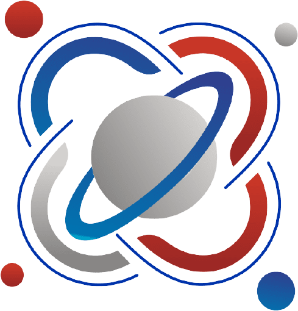
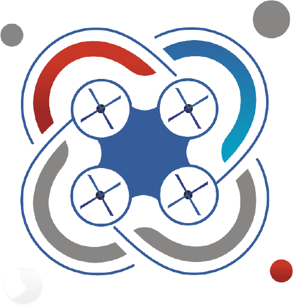
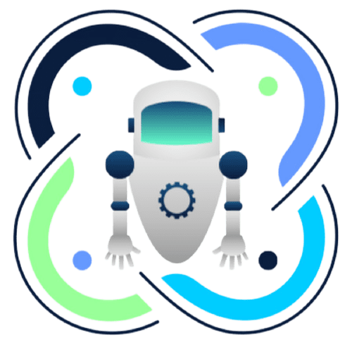

Нейроквантум
Динамично развивающиеся цифровые технологии достигли удивительных возможностей. Сегодня сложно себе представить какую-то область человеческой деятельности без применения технических средств и сети Интернет. Следующим этапом развития человечества будет сближение искуственных систем и их создателя - человека. В первую очередь - это появление новых мозг-компьютерных интерфейсов, позволяющих отдавать команды устройствам напрямую, минуя клавиатуры, мыши, тач-скрины и даже так популярное сегодня голосовое управление. Исследование в области нейротехнологий открывают огромные возможности и по повышению возможностей человеческого мозга, органов чувств и нервной системы: улучшение памяти, зрения, слуха , скорости мышления, обработки информации. Уже сегодня достижения в этой сфере помогают миллионам людей по всему миру восстановить и улучшить функции органима после аварий, инсультов, травм путем использования интеллектуальных протезов и имплантатов.
IT-квантум
Информационные технологии призваны, основываясь и рационально используя современные достижения в области компьютерной техники и иных высоких технологий, новейших средств коммуникации, программного обеспечения и практического опыта, решать задачи по эффективной организации информационного процесса для снижения затрат времени, труда, энергии и материальных ресурсов во всех сферах человеческой жизни и современного общества.
Космоквантум

«Космоквант» – образовательная программа по аэрокосмическому и авиаконструкторскому направлению – одно из образовательных направлений данного кванта. Сначала ребята изучают теоретический материал – основы астрономии, космической механики, основы программирования и т.д.
Лазерквантум
С самого момента разработки лазер называли устройством, которое само ищет решаемые задачи.Лазеры нашли применение в самых различных областях — от коррекции зрения до управления транспортными средствами, от космических полётов до термоядерного синтеза. Сегодня каждый второй станок в мире оснащается лазерным излучателем., Лазер стал одним из самых значимых изобретений XX века. Появились тысячи видов лазеров с различной длиной волны. Однако, только лазеры с несколькими длинами волн: газовые СО2 (10,6 мкм), HeNe (0,63 мкм), твердотельные (1, 06 мкм) имеют массовое коммерческое промышленное применение. И хотя лазер изобрели уже полвека назад, потенциал их использования по-прежнему огромен и наверное пока недооценен. Лазерные технологии найдут свое применение во всех рынках Национальной технологической инициативы (НТИ), в которых Россия планирует технологическое лидерство к 2035 году.
Автоквантум
Широчайшее развитие автомобильного транспорта, способствуют повышению интереса детей к автомобильному делу, к автомобильной технике. Занимаясь в Автокванте, юные конструкторы получают много полезных сведений и навыков. Они знакомятся с общим устройством автомобиля, с основами его конструкции, изучают принципы работы двигателя и других механизмов на примере автомоделей различной конструкции и масштабов. Строят модели самых различных схем, конструкций, размеров и назначения - от простейших до современных гоночных и управляемых по радио, с которыми участвуют в первенствах и чемпионатах по автомодельному спорту.
Аэроквантум

Для большинства людей квадрокоптер ― это игрушка, от которой фанатеют, как взрослые, так и дети. Однако на практике, благодаря уникальному строению и новейшим технологиям, устройства можно использовать как для съемки видео с нестандартных ракурсов, так и доставки различных видов груза и даже в военных целях. Современные квадрокоптеры оборудованы гибкими системами электронного управления, бортовыми компьютерами и различными датчиками, позволяющими летать в любых погодных условиях.
Робоквантум

Робототехника – популярная сегодня наука, которая ведет работу в области разработки автоматизированных технических систем. Если раньше роботы были просто фантастикой, сегодня они окружают нас везде. Роботы спасают людей, трудятся в экстремальных условиях, опасных для человека, лечат, воюют, исследуют космос и служат развлечением. Робототехника опирается на определенные дисциплины, среди которых электроника, информатика, радиотехника, математика, физика и делает их более интересными для изучения. Не скучные формулы и примитивные опыты, а практическое применение законов физики. Не заучивание теорем и аксиом, а реальные расчеты, результатом которых становится работающее изобретение. Ребенок не просто что-то учит, а видит результат, применив изученное.
Геоквантум
Помимо повседневного личного использования, геопространственные технологии являются основой для работы и развития целых отраслей и направлений в мире: транспорт и логистика, геологоразведка и добыча полезных ископаемых, сельское хозяйство, строительство и ЖКХ, археология, кадастр и землеустройство, градостроительство, оборона и безопасность, управление территориями и территориально распределёнными организациями. Пространственные характеристики объектов и явлений, используемые вместе с большими массивами сопутствующей информации (в том числе «открытые данные») являются источником новых знаний об объектах, процессах и явлениях – в этом суть Геоинформатики (картографии) как образовательного и научного направления.